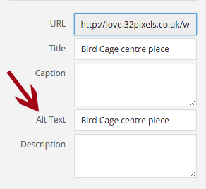

First you need to log in to the backend of your website.
I have created an account for each of you. You should have received an email from Wordpress containing your login information.
Once you have logged in, you'll be taken to your dashboard. From here you can update text, add new products and upload images.
Starting from the top, here's how to add new photos to the image carousel:
When uploading a new image anywhere on the site, you need to ensure you fill in the 'Alt Text' field. This is the text that will describe the image to people who can't see them. It is vital this information is filled in and accurate - Google hates it if your images don't have alt text. Just click the image you are going to use and a side panel will appear containing information about the image. In the 'Alt Text' field you just need to input text that describes the image.
To optimise your website and make sure it runs as fast as possible, make sure you upload the correct image size. Uploading images that are too big will slow the site down. Uploading images that are too small will product images that look pixelated and blurred.
If you'd like to use an existing image, click to select the image and click 'Set Featured image'.
To edit or delete an image in the carousel, just hover over title of the carousel image you'd like to change and you'll see the option to edit or delete it.
Here is also where you can change the visibility of a page. If you'd like to keep the page, but unpublish it from the site, just click 'Edit' next the Status of the page and choose 'draft' from the dropdown menu.
The testimonials are pulled through from the testimonial plugin. To edit these, you need to edit Testimonials.
The 'Inspiration' section takes the two latest blog posts and displays it on the homepage. To edit these, you need to edit your Blog posts.
Here's how to add new testimonials to the testimonials slider on your homepage:
For continuity, I would recommend keeping the information you enter for each testimonial consistent. In your current site, I have just included the Client's name.
How to edit an existing testimonial:
Here is also where you can quickly edit, delete and preview each testimonial.
Here's how to add new blog articles:
You can edit a blog post in exactly the same way that you'd edit a testimonial.
Here's how to add new products:
You can edit a product in the usual way by clicking the title or hovering on the title and selecting the edit option. You'll notice that you also have the option to duplicate a product. I would suggest using this where possible as it will help you to maintain continuity throughout the site.